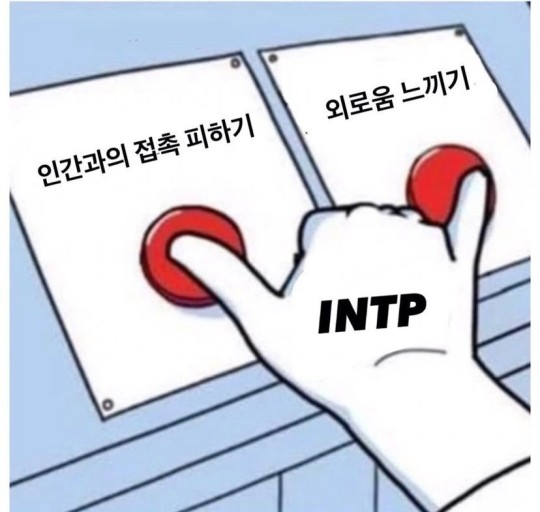

- intp
- infp
- infj
INTP
논리적인 사색가, 아이디어 뱅크형
조용하고 과묵하며 논리와 분석으로 문제를 해결하기 좋아한다.
먼저 대화를 시작하지 않는 편이나 관심이 있는 분야에 대해서는 말을 많이 한다.
이해가 빠르고 직관력으로 통찰하는 능력이 있으며 지적 호기심이 많아, 분석적이고 논리적이다.
MBTI 16가지 성격 유형중 창의적 지능과 논리면에서 가장 뛰어나, 비과학적이거나 논리적이지 못한 일들에 대단히 거부반응을 보일 경향이 높다.
아이디어와 원리, 인과관계에 관심이 많으며 실체보다는 실체가 안고 있는 가능성에 관심이 많다.
